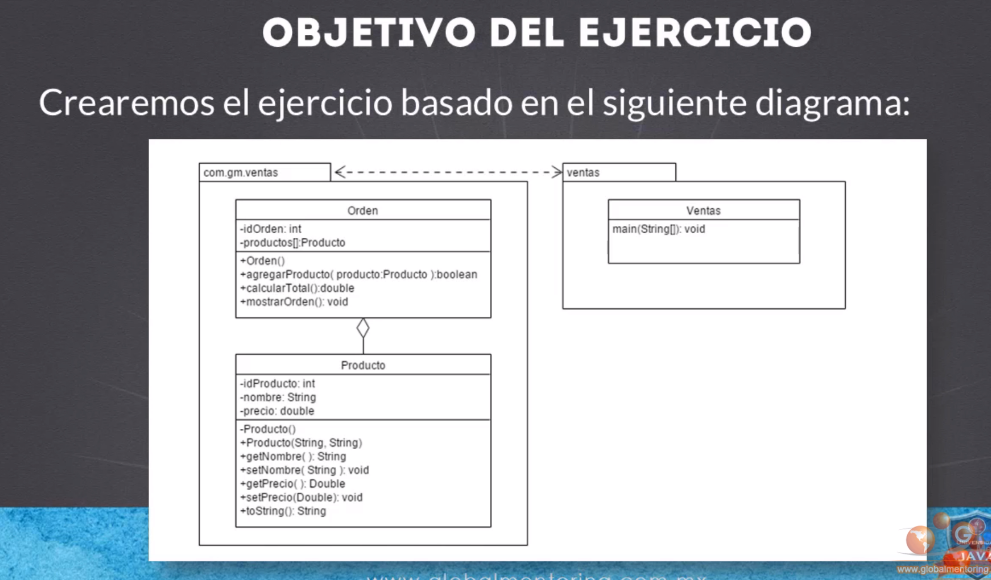
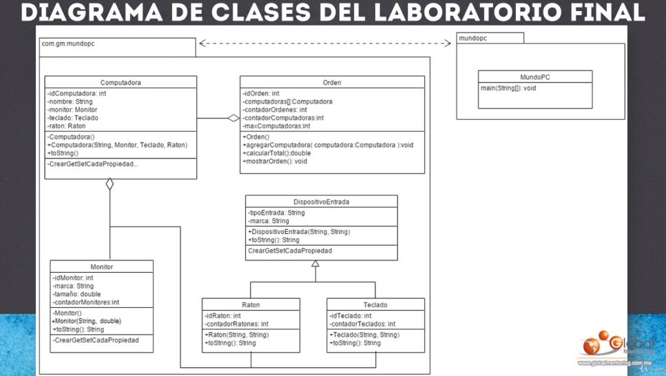

CURSO JAVA
INSTALACION
- Instalamos JAVA
# cd /opt
# wget https://download.java.net/java/GA/jdk13/5b8a42f3905b406298b72d750b6919f6/33/GPL/openjdk-13_linux-x64_bin.tar.gz
# tar -xvf openjdk-13_linux-x64_bin.tar.gz
# export JAVA_HOME=/opt/jdk-13/
# export PATH=$PATH:/opt/jdk-13/bin
También puede definirlo en el archivo de inicio del shell global / etc / environment como se muestra.
# vi /etc/environment
# export JAVA_HOME=/usr/lib/jvm/java-17-openjdk
# export PATH=$PATH:/usr/lib/jvm/java-17-openjdk/bin
# source /etc/environment
- Instalamos Apache Netbeans:
wget https://dlcdn.apache.org/netbeans/netbeans-installers/12.6/Apache-NetBeans-12.6-bin-linux-x64.sh
chmod +x Apache-NetBeans-12.6-bin-linux-x64.sh
sudo ./Apache-NetBeans-12.6-bin-linux-x64.sh
Seguimos los pasos para instalar y arrancamos con
netbeans.
Podemos instalar plugins en my Netbeans - available plugins.
-
Version oscura instalando el plugin DRACULA APACHE NETBEANS.
HELLOWORLD
- CONTROL + E borra comentarios.
- CONTROL + SHIFT + F ajusta bien el codigo.
- Creamos un proyecto nuevo de Helloworld con las caracteristicas que le digamos.
- En pom.xml nos indica las caracteristicas de java.
- En source package hacemos boton derecho y nueva clase con el mismo nombre,siempre se empieza por mayusculas.
//Mi clase en Java
public class HelloWorld {
public static void main(String args[]){
System.out.println("Hola Mundo desde Java");
}
}
psvm y sout + tabulador y agrega ese codigo rapido
Si se pone soloprintlnno lo imprime en otra linea.
VARIABLES
String
- Se puede poner el tipo como String, int, float, chart... o var en las nuevas versiones:
public class HelloWorld {
public static void main(String args[]){
String saludar = "Saludos!";
System.out.println("Hola Mundo desde Java");
System.out.println(saludar);
//nuevas versiones se va usando var para variables
var despedirse = "Adios";
System.out.println(despedirse);
// variable entero
var numero = 1;
System.out.println(numero);
System.out.println(saludar + despedirse);//se junta y numeros primero lo suma
System.out.println(saludar + " " + despedirse);
// tipo input
Scanner scanner = new Scanner(System.in);
System.out.println("Proporciona un usuario: ");
var usuario = scanner.nextLine();
System.out.println("Usuario = " + usuario);
}
}
Enteros
- Short,int,long,byte:
import java.util.Scanner;
/*
Esto es un comentario
*/
//Mi clase en Java
public class HelloWorld {
public static void main(String args[]){
//byte, short, int, long
byte byteVar = 127;
System.out.println("byteVar = " + byteVar);
System.out.println("bits tipo byte:" + Byte.SIZE);
System.out.println("bytes tipos byte:" + Byte.BYTES);
System.out.println("valor minimo tipo byte:" + Byte.MIN_VALUE);
System.out.println("valor maximo tipo byte:" + Byte.MAX_VALUE);
short shortVar = 32767;
System.out.println("shortVar = " + shortVar);
System.out.println("bits tipo short:" + Short.SIZE);
System.out.println("bytes tipos short:" + Short.BYTES);
System.out.println("valor minimo tipo short:" + Short.MIN_VALUE);
System.out.println("valor maximo tipo short:" + Short.MAX_VALUE);
int intVar = 2147483647;
System.out.println("intVar = " + intVar);
System.out.println("bits tipo int:" + Integer.SIZE);
System.out.println("bytes tipos int:" + Integer.BYTES);
System.out.println("valor minimo tipo int:" + Integer.MIN_VALUE);
System.out.println("valor maximo tipo int:" + Integer.MAX_VALUE);
long longVar = 9223372036854775807L;
System.out.println("longVar = " + longVar);
System.out.println("bits tipo long:" + Long.SIZE);
System.out.println("bytes tipos long:" + Long.BYTES);
System.out.println("valor minimo tipo long:" + Long.MIN_VALUE);
System.out.println("valor maximo tipo long:" + Long.MAX_VALUE);
var numeroInt = 2147483647;
System.out.println("numeroInt = " + numeroInt);
var numeroLong = 2147483648L;
System.out.println("numeroLong = " + numeroLong);
}
}
Flotantes
import java.util.Scanner;
public class HelloWorld {
public static void main(String args[]) {
var floatVar = 1000.10F;
System.out.println("floatVar = " + floatVar);
System.out.println("bits tipo float:" + Float.SIZE);
System.out.println("bytes tipo float:" + Float.BYTES);
System.out.println("valor minimo tipo float:" + Float.MIN_VALUE);
System.out.println("valor maximo tipo float:" + Float.MAX_VALUE);
var doubleVar = 100D;
System.out.println("doubleVar = " + doubleVar);
System.out.println("bits tipo double:" + Double.SIZE);
System.out.println("bytes tipo double:" + Double.BYTES);
System.out.println("valor minimo tipo double:" + Double.MIN_VALUE);
System.out.println("valor maximo tipo double:" + Double.MAX_VALUE);
}
}
Tipo chart
- Solo soporta un caracter.
import java.util.Scanner;
public class HelloWorld {
public static void main(String args[]) {
System.out.println("bits tipo char:" + Character.SIZE);
System.out.println("bytes tipo char:" + Character.BYTES);
System.out.println("valor minimo tipo char:" + Character.MIN_VALUE);
System.out.println("valor maximo tipo char:" + Character.MAX_VALUE);
var varChar = '\u0021';
System.out.println("varChar = " + varChar);
var varCharDecimal = 33;
System.out.println("varCharDecimal = " + varCharDecimal);
var varCharSimbolo = '!';
System.out.println("varCharSimbolo = " + varCharSimbolo);
}
}
Boleanos
- True o False:
import java.util.Scanner;
public class HelloWorld {
public static void main(String args[]) {
//boolean
System.out.println("true tipo boolean: " + Boolean.TRUE);
System.out.println("false tipo boolean: " + Boolean.FALSE);
boolean booleanVar = false;
if(booleanVar){
System.out.println("el valor es verdadero");
}
else{
System.out.println("el valor es falso");
}
System.out.println("");
var edad = 30;
var esAdulto = edad >= 18;
System.out.println("esAdulto = " + esAdulto);
}
}
Conversion de variables
import java.util.Scanner;
public class HelloWorld {
public static void main(String args[]) {
//convertir un String a un tipo int
var edad = Integer.parseInt("20");
System.out.println("edad = " + edad);
double valorPI = Double.parseDouble("3.1416");
System.out.println("valorPI = " + valorPI);
char c = "hola".charAt(3);
System.out.println("c = " + c);
//introducir una edad
var scanner = new Scanner(System.in);
edad = Integer.parseInt(scanner.nextLine()) ;
System.out.println("edad = " + edad);
char caracter = scanner.nextLine().charAt(0);
System.out.println("caracter = " + caracter);
String edadTexto = String.valueOf(false);
System.out.println("edadTexto = " + edadTexto);
short s = 129;
byte b = (byte) s;
System.out.println("b = " + b);
}
}
OPERACIONES
- Aritmeticos:
import java.util.Scanner;
public class HelloWorld {
public static void main(String args[]) {
int a = 3, b = 2;
var resultado = a + b;
System.out.println("resultado suma = " + resultado);
System.out.println("resultado suma=" + (a + b) );
resultado = a - b;
System.out.println("resultado resta = " + resultado);
System.out.println("resultado resta = " + (a - b));
resultado = a * b;
System.out.println("resultado multiplicacion = " + resultado);
double resultado2 = 3D / b;
System.out.println("resultado division = " + resultado2);
resultado = a % b;
System.out.println("resultado modulo= " + resultado);
resultado = a % 2;
System.out.println("resultado = " + resultado);
resultado = 123 % 2;
System.out.println("resultado = " + resultado);
if(resultado == 0)
System.out.println("es numero par");
else
System.out.println("es numero impar");
}
}
- De asignacion:
import java.util.Scanner;
public class HelloWorld {
public static void main(String args[]) {
int a = 3, b = 2;
int c = a + 5 - b;
System.out.println("c = " + c);
a += 1;//a=a+1
System.out.println("a = " + a);
a += 3;//a=a+3
System.out.println("a = " + a);
b -= 1;//b=b-1
System.out.println("b = " + b);
// *=, /=, %=
}
}
- Unarios:
import java.util.Scanner;
public class HelloWorld {
public static void main(String args[]) {
// el negativo para invertir
int a = 3;
int b = -a;
System.out.println("b = " + b);
// el ! para invertir el booleano
boolean c = true;
boolean d = !c;
System.out.println("d = " + d);
//incremento
//preincremento
int e = 3;
int f = ++e; //la e se incrementa 1 y f se queda con este valor
System.out.println("e = " + e);
System.out.println("f = " + f);
//postincrement
int g = 5;
int h = g++;//la g se incrementa 1 y f se queda sin incremento
System.out.println("g = " + g);
System.out.println("h = " + h);
//decremento
//predecremento
int i=2;
int j = --i;//la i se disminuye 1 y f se queda con este valor
System.out.println("i = " + i);
System.out.println("j = " + j);
//postdecremento
int k=4;
int l= k--;//la k se disminuye 1 y f se queda sin restar
System.out.println("k = " + k);
System.out.println("l = " + l);
}
}
- De comparacion:
import java.util.Scanner;
public class HelloWorld {
public static void main(String args[]) {
int a = 3, b = 4;
boolean c = (a == b);
System.out.println("c = " + c);
c = (a != b);
System.out.println("c = " + c);
String cadena = "hola";
String cadena2 = "hola";
// printa comparando las dos cadenas
System.out.println(cadena.equals(cadena2));
boolean d = a <= b;
System.out.println("d = " + d);
if (b % 2 == 0) {
System.out.println("numero par");
} else {
System.out.println("numero impar");
}
int edad = 31;
int adulto = 18;
if (edad >= adulto)
System.out.println("es un adulto");
else
System.out.println("es menor de edad");
}
}
- Booleanos:
import java.util.Scanner;
public class HelloWorld {
public static void main(String args[]) {
int a = 15;
int valorMinimo = 0, valorMaximo=10;
// && es un AND de si y si
boolean resultado = a >= valorMinimo && a <= valorMaximo;
System.out.println("resultado = " + resultado);
boolean vacaciones = false;
boolean diaDescanso = true;
// || es un OR es de si o si
if(vacaciones || diaDescanso)
System.out.println("Padre puede asistir al juego del hijo");
else
System.out.println("Padre ocupado");
}
}
- Ternario:
import java.util.Scanner;
public class HelloWorld {
public static void main(String args[]) {
// ternacio es una condicion
// (expresion) ? true(si es verdadera) :false(o falsa)
var resultado = (3 > 2) ? "verdadero" : false;
System.out.println("resultado = " + resultado);
// o la expresion puede dar un resultado entre dos
var numero = 8;
var par = (numero % 2 == 0) ? "numero par" : "numero impar";
System.out.println("par = " + par);
}
}
- Prioridad de operaciones:
import java.util.Scanner;
public class HelloWorld {
public static void main(String args[]) {
var x = 5;
var y = 10;
var z = ++x + y--;//x=6, y=9, z=(6+10)16
System.out.println("x = " + x);
System.out.println("y = " + y);
System.out.println("z = " + z);
System.out.println("\nEjemplo 2 precedencia operadores");
var resultado = 4 + 5 * 6 / 3;// 4+((5*6)/3) => 4+(30/3) => 4+10 => 14
System.out.println("resultado = " + resultado);
resultado = (4 + 5) * 6 / 3; //18
System.out.println("resultado = " + resultado);
}
}
CONDICIONALES
-
Cuando es una linea de sentencia se pueden ahorrar las llaves:
-
COndicion basica:
import java.util.Scanner;
public class HelloWorld {
public static void main(String args[]) {
var condition = true;
if (condition) {
System.out.println("Es verdadera");
} else {
System.out.println("Es falsa");
}
var numero = 12;
var texto = "Numero desconocido"
if (numero == 1) {
texto = "Numero 1";
//System.out.println("Numero igual a 1");
} else if (numero == 2) {
texto = "Numero 2";
//System.out.println("No es igual a 2");
} else {
texto = "Numero desconocido";
//System.out.println("No es igual a 1 ni 2");
}
System.out.println(texto);
}
}
- Ejemplo con mas condiciones y entrada input:
import java.util.Scanner;
public class HelloWorld {
public static void main(String args[]) {
var scanner = new Scanner(System.in);
System.out.println("Proporciona el mes del año:");
var mes = scanner.nextInt();//mes del año
String estacion = null;
if (mes == 1 || mes == 2 || mes == 12) {
estacion = "Invierno";
} else if (mes == 3 || mes == 4 || mes == 5) {
estacion = "Primavera";
} else if (mes == 6 || mes == 7 || mes == 8) {
estacion = "Verano";
} else if (mes == 9 || mes == 10 || mes == 11) {
estacion = "Otoño";
} else {
estacion = "Mes incorrecto";
}
System.out.println("estacion:" + estacion + " para el mes: " + mes);
}
}
- ESTRUCTURA SWITCH para diferentes opciones:
import java.util.Scanner;
public class HelloWorld {
public static void main(String args[]) {
var numero = 1;
var numeroTexto = "numero desconocido";
switch (numero) {
case 1:
numeroTexto = "numero uno";
break;
case 2:
numeroTexto = "numero dos";
break;
case 3:
numeroTexto = "numero tres";
break;
default:
numeroTexto = "numero desconocido";
}
System.out.println("numero texto:" + numeroTexto + " para el numero proporcionado:" + numero);
}
}
import java.util.Scanner;
public class HelloWorld {
public static void main(String args[]) {
var scanner = new Scanner(System.in);
System.out.println("Proporcionar el valor del mes");
var mes = scanner.nextInt();
String estacion = null;
switch ( mes ){
case 1: case 2: case 12:
estacion = "Invierno";
break;
case 3: case 4: case 5:
estacion = "Primavera";
break;
case 6: case 7: case 8:
estacion = "Verano";
break;
case 9: case 10: case 11:
estacion = "Otoño";
break;
default:
estacion = "Mes incorrecto";
}
System.out.println("estacion: " + estacion + " para el mes:" + mes);
}
}
Para varios case a la vez.
BUCLES
- BUCLE WHILE / DO WHILE:
import java.util.Scanner;
public class HelloWorld {
public static void main(String args[]) {
var contador = 0;
while (contador < 3) {
System.out.println("contador = " + contador);
contador++; //PARA QUE INCREMENTE 1
}
do {
System.out.println("contador = " + contador);
contador++;
} while (contador < 3);
}
}
- BUCLE FOR:
import java.util.Scanner;
public class HelloWorld {
public static void main(String args[]) {
for (var i = 0; i < 3; i++) {
System.out.println("i = " + i);
}
}
}
Iniciar, condicion, incremento.
- BUCLES CON BREAK/CONTINUE:
import java.util.Scanner;
public class HelloWorld {
public static void main(String args[]) {
for (var i = 0; i < 3; i++) {
//Imprimimos solo numeros pares
if (i % 2 == 0) {
System.out.println("i = " + i);
break;
}
}
for (var i = 0; i < 3; i++) {
//Imprimimos solo numeros pares
if (i % 2 != 0) {
continue;
}
System.out.println("i = " + i);
}
}
}
- LABELS en los bucles:
import java.util.Scanner;
public class HelloWorld {
public static void main(String args[]) {
Inicio:
for (var i = 0; i < 3; i++) {
//Imprimimos solo numeros pares
if (i % 2 == 0) {
System.out.println("i = " + i);
break Inicio;
}
}
}
}
Se le pone una etiqueta antes del bucle y para hacer break/continue se llama al label.
CLASES JAVA
-
Una clase es una plantilla que sirven para crear objetos. Tienen nombre, atributos y metodos.
-
Una clase debe terminar en .java y empieza en mayusculas.
-
Creamos un nuevo proyecto - nombre - maven - java app.
-
Una vez creado vamos a source package - new java class y ponemos un nombre de la clase, ejemplo "Persona".
-
El nombre de la clase a rellenar tiene que ser mismo nombre que al crear java class.
-
Ejemplo:
public class Persona {
//atributos de nuesta clase
string nombre;
string apellido;
//metodos de la clase
//lo usuaran los objetos de esta clase
public void desplegarNombre(){
// se pone void porque no regresa ningun dato, sino seria int,etc
System.out.println("nombre: ", nombre);
System.out.println("apellido; ", apellido);
}
}
OBJETOS
-
Cuando creamos un objeto o una clase, se reserva en memoria espacio para futuros objetos con sus atributos.
-
la clase string para crear variables y objetos puede ser:
String saludo = "Hola mundo"
saludo = new String("Hola Mundo") -
Creamos una nueva clase java class en source packages de "PruebaPersonas".
-
Ejemplo:
public class PruebaPersonas {
public static void main(String[] args) {
// creacion de un objeto de tipo persona
// definimos la variable de tipo Persona en ref class Persona
Persona persona1;
// creando un objeto de la clase Persona
persona1 = new Persona();
// accedemos al objeto y llamamos a los metodos y atributos de clase Persona
persona1.desplegarNombre();
// asignamos valores de los atributos del objeto Persona
persona1.nombre = "Miguel";
persona1.apellido = "Amoros";
persona1.desplegarNombre();
// creamos otro objeto
Persona persona2 = new Persona();
persona2.nombre = "Natalia";
persona2.apellido = "Sendra";
persona2.desplegarNombre();
}
}
METODOS
- Son funciones dentro de una clase.
- Creamos un nuevo proyecto "ProyectoAritmetica" y creamos una nueva clase "Aritmetica".
public class Aritmetica {
// si ponemos argumentos, no son las variables de los atributos
public int sumar(int a, int b){
//cuerpo de creacion de nuestro metodo
int resultado = a + b;
return resultado; //el valor debe ser mismo tipo que sintaxi de public
}
}
- Despues creamos otra java class "PruebaAritmetica para llamar a nuestro metodo creado a través de la creacion de un objeto con la clase Aritmetica:
public class PruebaAritmetica {
public static void main(String[] args) {
// creamos un objeto de tipo Aritmetica
Aritmetica mates = new Aritmetica();
//llamamos al metodo para nuestra variable del objeto
//mismo tipo guardado que creacion de metodo "int" ejemplo
int resultado = mates.sumar(5, 3);
System.out.println("El resultado es: "+ resultado);
}
}
CONSTRUCTORES
-
Son como los metodos pero ya se inician a la creacion del objeto.
-
Tiene que tener el mismo nombre que la clase.
-
Los constructores vacíos se agregan solos al compilar si no son llamados.
-
Los constructores solo son llamados cuando creamos el objeto, no se pueden llamar como los metodos:
public class Aritmetica {
//definimos un constructor vacio y se llama como la clase
public Aritmetica(){
System.out.println("Ejecutando constructor vacio");
}
// si ponemos argumentos, no son las variables de los atributos
public int sumar(int a, int b){
//cuerpo de creacion de nuestro metodo
int resultado = a + b;
return resultado; //el valor debe ser mismo tipo que sintaxi de public
}
}
public class PruebaAritmetica {
public static void main(String[] args) {
// creamos un objeto de tipo Aritmetica
Aritmetica mates = new Aritmetica();
//llamamos al metodo para nuestra variable del objeto
//mismo tipo guardado que creacion de metodo "int" ejemplo
int resultado = mates.sumar(5, 3);
System.out.println("El resultado es: "+ resultado);
}
}
Ejecutando constructor vacio
El resultado es: 8
- Constructor con argumentos, ya no agrega el vacio, solo el de argumentos:
public class Aritmetica {
// atributos de la clase. Por defecto es 0
int a;
int b;
//definimos un constructor vacio y se llama como la clase
public Aritmetica(){
//a = 2;
//b = 5; //llamariamos al metodo de suma sin argumentos
System.out.println("Ejecutando constructor vacio");
}
//definimos un constructor de tipo publico con argumentos
public Aritmetica(int arg1, int arg2){
a = arg1;
b = arg2;
System.out.println("Ejecutando constuctor con argumentos");
}
// creacion de un metodo
// si ponemos argumentos, no son las variables de los atributos
public int sumar(){
//cuerpo de creacion de nuestro metodo
int resultado = a + b;
return resultado; //el valor debe ser mismo tipo que sintaxi de public
}
}
public class PruebaAritmetica {
public static void main(String[] args) {
// creamos un objeto de tipo Aritmetica
Aritmetica mates = new Aritmetica();
//podemos dar valores accediendo a atributos de nuestra clase
mates.a = 3;
mates.b = 5;
//llamamos al metodo para nuestra variable del objeto
//mismo tipo guardado que creacion de metodo "int" ejemplo
int resultado = mates.sumar();
System.out.println("El resultado es: "+ resultado);
// creacion de otro objeto de tipo Aritmetica
Aritmetica mates2 = new Aritmetica(4, 3);
System.out.println("El resultado es: "+ mates2.sumar());
}
}
Ejecutando constructor vacio El resultado es: 8 Ejecutando constuctor con argumentos El resultado es: 7
OPERANDO THIS
-
El operando THIS sirve para quitar la ambiguedad de variables o argumentos que sean iguales al nombre de estas variables, ejemplo a=a, sería this.a = a:
-
Ejemplo del laboratotio de crear una clase de una caja, calcular volumen de la caja y crear una clase de prueba creando el objeto y pritando el volumen:
public class Caja {
private int ancho;
private int alto;
private int profundo;
public Caja() {
}
public Caja(int ancho, int alto, int profundo) {
this.ancho = ancho;
this.alto = alto;
this.profundo = profundo;
}
public int calcularVolumen() {
return ancho * alto * profundo;
}
public int calcularVolumen(int ancho, int alto, int profundo) {
return ancho * alto * profundo;
}
}
public class PruebaCaja {
public static void main(String args[]) {
int medidaAncho = 3;
int medidaAlto = 2;
int medidaProf = 6;
Caja caja1 = new Caja();
int resultado = caja1.calcularVolumen(medidaAncho, medidaAlto, medidaProf);
System.out.println("resultado de caja 1:" + resultado);
Caja caja2 = new Caja(2, 4, 6);
System.out.println("resultado de caja 2:" + caja2.calcularVolumen());
}
}
- This tambien puede hacer referencia asi mismo donde esté:
public class PalabraThis {
//metodo
public static void main(String[] args) {
Persona persona = new Persona("Miguel");
}
}
class Persona{
String nombre;
//constructor
Persona(String nombre){
this.nombre = nombre;//this apunta a un objeto tipo persona
// creamos objeto
Imprimir imprimir = new Imprimir();
imprimir.imprimir(this);//contiene ref al objeto persona
}
}
class Imprimir{
//metodo
public void imprimir(Persona p1) {
//valor del objeto persona
System.out.println("Impresion argumento persona; " + p1);
// this apunta a un objeto de tipo imprimir
System.out.println("Impresion objeto actual(this); " + this);
}
}
PASO POR VALOR Y REFERENCIA
- El paso por valor son de valores de tipo primitivo. Se pasa una copia del valor iriginal de la variable.
- Ejemplo en un nuevo proyecto:
public class PasoPorValor {
public static void main(String[] args) {
// valor primitivo
var x = 10;
System.out.println("x = " + x);
// metodo
// vemos que se le pasa la copia pero no cambia el valor de x despues
cambiarValor(x); //click a la alerta y se crea el metodo debajo
//vuelve a tener x su valor
System.out.println("x = " + x);
}
//privado significa que solo se puede usar en esta clase
private static void cambiarValor(int arg) {
arg = 20;
System.out.println("x = " + arg);
}
}
- El paso por referencia se aplica en objetos cuando se pasa argumentos y se pasa dirrectamente la referencia de la variable y no una copia.
- Ejemplo en un nuevo proyecto:
public class Persona {
//atributo
String nombre;
//metodo
public String obtenerNombre(){
return this.nombre;
}
//metodo
public void cambiarNombre(String nuevoNombre) {
this.nombre = nuevoNombre;
}
}
public class PasoPorReferencia {
public static void main(String[] args) {
// objeto
Persona persona = new Persona();
//usamos los metodos para cambiar el nombre
persona.cambiarNombre("Miguel");
System.out.println("Nombre: "+ persona.obtenerNombre());
//metodo
modificarPersona(persona);
System.out.println("Nombre: "+ persona.obtenerNombre());
}
//metodo modificarPersona (cambiamos nombre de arg)
private static void modificarPersona(Persona personaArg) {
personaArg.cambiarNombre("Miguelito");
}
}
RETURN
- Se usa para retornar un resultado de una variable, ejemplo
return resultado.
public class ReturnTipoPrimitivo {
public static void main(String[] args) {
sumarSinRetornarValor(3,9);
int resultado = sumarRetornarValor(5,5);
System.out.println("Return retornar valor: "+ resultado);
}
private static void sumarSinRetornarValor(int a, int b) {
System.out.println("Return sin retornar valor: "+ (a+b));
//return; es opcional, si es tipo void no retorna nada
}
private static int sumarRetornarValor(int a, int b) {
if (a==0 && b==0){
return 0; //si llega a este return no llega al otro.
}
return a+b; //obligatorio al poner tipo int y no void
}
}
- Se encuentra en tipo objeto:
public class ReturnClases {
public static void main(String[] args) {
// crea el objeto indirectamente con el metodo
Suma s = creaObjetoSuma();
//objeto con los metodos
System.out.println("Resultado metodo sumar: "+ s.sumar());
}
//metodo
private static Suma creaObjetoSuma(){
Suma suma = new Suma(3,2);
return suma;
}
}
class Suma {
//atributos
int a;
int b;
//constructor
public Suma(int a, int b){
this.a = a;
this.b = b;
}
//metodo
public int sumar(){
return this.a + this.b;
}
}
NULL
-
Cuando una variable no tiene asignado nada.
-
Ejemplo:
public class PalabraNull {
public static void main(String[] args) {
// crear objeto y llamar al metodo de la clase Persona
Persona persona1 = new Persona("Miguel");
System.out.println("Nombre: "+ persona1.ObtenerNombre());
Persona persona2 = persona1;
System.out.println("Nombre: "+ persona2.ObtenerNombre());
persona1 = null;
if (persona1!=null){
System.out.println("Nombre: "+ persona1.ObtenerNombre());
} else {
System.out.println("Nombre: nulo");
}
}
}
class Persona{
String nombre;
//constructor
Persona(String nombre){
this.nombre = nombre;
}
//metodo
public String ObtenerNombre(){
return this.nombre;
}
}
ENCAPSULAMIENTO
-
MODIFICADORES DE ACCESO:
- PRIVATE: permite acceder solo desde la misma clase al metodo o atributo marcado con este modificador.
- PUBLIC: perimite acceder desde cualquier clase a cualquier metodo o atributo definido con este modificador.
Metodo GET siempre para obtener y metodo SET para modificar.
-
Ejemplo classe Persona:
public class Persona {
//atributos
private String nombre;
private double sueldo;
private boolean eliminado;
public Persona(String nombre, double sueldo, boolean eliminado){
this.nombre = nombre;
this.sueldo = sueldo;
this.eliminado = eliminado;
}
//metodo get para retornar solo en nombre en privado y este metodo será llamado desde otros
public String getNombre(){
return this.nombre;
}
//metodo publico de la variable private nombre
public void setNombre(String nombre){
this.nombre = nombre;
}
// al poner privado la variable se puede insertar automaticamente set/get
public double getSueldo() {
return sueldo;
}
public void setSueldo(double sueldo) {
this.sueldo = sueldo;
}
public boolean isEliminado() {
return eliminado;
}
public void setEliminado(boolean eliminado) {
this.eliminado = eliminado;
}
// para no imprimir tantas veces la linea de print para cada variable
//metodo DOSTRING
public String toString(){
return "Nombre: "+ nombre+ " " + "Sueldo: " + sueldo + " "+ "Eliminado: "+ eliminado;
}
}
Podemos generar directamente con private el codigo de los SET/GET/TOSTRING con boton derecho INSERT CODE.
- Ejemplo de pruebaPersona:
public class PruebaPersona {
public static void main(String[] args) {
Persona persona = new Persona("Miguel",5000, false);
// cuando la variable es publica
//System.out.println("Nombre: "+ persona.nombre);
// cuando la variable es privada de otra clase, se llama al metodo publico GET/SET
System.out.println("Nombre: "+ persona.getNombre());
//llamamos al metodo set de moficiar nombre
persona.setNombre("MIguelito");
System.out.println("Nombre: "+ persona.getNombre());
System.out.println("Sueldo: "+ persona.getSueldo());
System.out.println("Eliminado?: "+ persona.isEliminado());
persona.setSueldo(2000);
persona.setEliminado(true);
System.out.println("Sueldo: "+ persona.getSueldo());
System.out.println("Eliminado?: "+ persona.isEliminado());
// IMPRIMIR TODO EN UNO CON METODO TOSTRING
System.out.println("persona: "+ persona.toString());
System.out.println("persona: "+ persona);//default es tostring
}
}
STATIC
- Van relacionado con las clases.
- No se usa THIS en un metodo STATIC.
-
Los atributos estaticos hacen referencia ala clase y no cambia d valor mientras que los no staticos se asocian al objeto y se puede asignar el que quiera.
-
Ejemplo:
public class Persona {
private int idPersona;//se asocia con un objeto (instancia)
private String nombre;//se asocia con un objeto (instancia)
private static int contadorPersonas;//se asocia con la clase
public Persona(String nombre){
this.idPersona = ++contadorPersonas;
this.nombre = nombre;
}
public int getIdPersona(){
return this.idPersona;
}
// public void setIdPersona(int idPersona){
// this.idPersona = idPersona;
// }
public String getNombre(){
return this.nombre;
}
public void setNombre(String nombre){
this.nombre = nombre;
}
public static int getContadorPersonas(){
return contadorPersonas;
}
@Override
public String toString(){
return "idPersona: " + idPersona + ", nombre: " + nombre + ", contadorPersonas:" + contadorPersonas;
}
}
- Prueba:
public class EjemploEstatico {
public static void main(String[] args) {
Persona persona1 = new Persona("Juan");
System.out.println(persona1);
Persona persona2 = new Persona("Karla");
System.out.println(persona2);
Persona persona3 = new Persona("Carlos");
System.out.println(persona3);
System.out.println("contadorPersonas:" + Persona.getContadorPersonas());
}
}
HERENCIA
- Hay una clase padre y todos suss hijos heredas todos sus atributos y metodos publicos.
- Se utiliza EXTENDS para heredar del padre.
-
Se utiliza SUPER para llamar a un atributo padre.
-
Ejemplo clase padre:
public class Persona {
//atributos
private String nombre;
private char genero;
private int edad;
private String direccion;
//constructor vacio
public Persona(){
}
//constructor con argumento
public Persona(String nombre){
this.nombre = nombre;
}
//constructor completo
public Persona(String nombre,char genero,int edad,String direccion){
this.nombre = nombre;
this.genero = genero;
this.edad = edad;
this.direccion = direccion;
}
//metodos get/set con boton derecho insert code
public String getNombre() {
return nombre;
}
public void setNombre(String nombre) {
this.nombre = nombre;
}
public char getGenero() {
return genero;
}
public void setGenero(char genero) {
this.genero = genero;
}
public int getEdad() {
return edad;
}
public void setEdad(int edad) {
this.edad = edad;
}
public String getDireccion() {
return direccion;
}
public void setDireccion(String direccion) {
this.direccion = direccion;
}
//metodo tostring boton derecho insert code
@Override
public String toString() {
return "Persona{" + "nombre=" + nombre + ", genero=" + genero + ", edad=" + edad + ", direccion=" + direccion + '}';
}
}
- Ejemplo clase hijos:
public class Empleado extends Persona {
//al poner extends hereda todos las class public de Persona
//atributos
private int idEmpleado;
private double sueldo;
private static int contadorEmpleado;
//constructor
//se utiliza super para llamar a un atributo de la clase padre
//ha de ser siempre la primera linea SUPER
public Empleado(String nombre,double sueldo){
super(nombre);
this.idEmpleado = ++contadorEmpleado;
this.sueldo = sueldo;
}
//metodos get /set
public int getIdEmpleado() {
return idEmpleado;
}
public double getSueldo() {
return sueldo;
}
public void setSueldo(double sueldo) {
this.sueldo = sueldo;
}
public static int getContadorEmpleado() {
return contadorEmpleado;
}
@Override
public String toString() {
return super.toString() + "Empleado{" + "idEmpleado=" + idEmpleado + ", sueldo=" + sueldo + '}';
}
}
- Ejemplo clase hijos:
import java.util.Date;
public class Cliente extends Persona {
//al poner extends hereda todos las class public de Persona
//atributos
private int idCliente;
private Date fechaRegistro;
private boolean vip;
private static int contadorClientes;
//constructor
//se utiliza super para llamar a un atributo de la clase padre
public Cliente(Date fechaRegistro, boolean vip){
this.idCliente = idCliente;
this.idCliente = ++contadorClientes;
this.vip = vip;
}
//metodos get /set
public int getIdCliente() {
return idCliente;
}
public Date getFechaRegistro() {
return fechaRegistro;
}
public void setFechaRegistro(Date fechaRegistro) {
this.fechaRegistro = fechaRegistro;
}
public boolean isVip() {
return vip;
}
public void setVip(boolean vip) {
this.vip = vip;
}
public static int getContadorClientes() {
return contadorClientes;
}
//metodo to string
@Override
public String toString() {
return super.toString() + "Cliente{" + "idCliente=" + idCliente + ", fechaRegistro=" + fechaRegistro + ", vip=" + vip + '}';
}
}
- Ejemplo prueba clases padre/hijos:
import java.util.Date;
public class EjemploHerencia {
public static void main(String[] args) {
//creamos objeto
Empleado empleado1 = new Empleado("Miguel", 2000);
//podemos llamarlo porque hereda del padre este atributo
empleado1.setEdad(28);
empleado1.setDireccion("Agudells 66");
System.out.println(empleado1);
//creamos objeto
Cliente cliente1 = new Cliente(new Date(),true);
System.out.println(cliente1);
}
}
PAQUETES JAVA
- Son carpetas que agrupan clases,etc.
- Estandar de paquetes:
- Todo en minisculas.
- si es web, dominio nombre invertido:
mx.com.globalmentoring - nombre de un proyecto:
mx.com.globalmentoring.miproyecto - subpaquetes:
mx.com.globalmentoring.contabilidad.miproyecto
- Definimos paquete con
package com.gm; - Importamos paquete con
import static com.gm.Utileria.imprimir - Mas usados:
- java.lang: clases esenciales
- java.util: clases de utilerias como date
- java.io: datos input/output
- java.net: leer/escribir datos en la red
- java.applet: para crear applets en la ventana navegador
- java.awt: para crear aplicacion GUI
- Crear new package.
- Por cada punto en el nombre del paquete, se crea una carpeta.
-
Despues creamos un java class dentro de esta direccion del paquete.
-
Ejemplo:
package com.gm;
public class Utileria {
public static void imprimir(String g){
System.out.println(g);
}
}
- Prueba paquete:
//importamos con.gm.utileria o todas con com.gm.*
import com.gm.Utileria;
//import com.gm.*;
//import static com.gm.utileria.imprimir
public class EjemploPaquetesPrueba {
public static void main(String[] args) {
//importamos paquete con el nombre de la clase completo
com.gm.Utileria.imprimir("Hola Miguel!");
//import de la clase(se agrega automaticamente arriba)
Utileria.imprimir("Holaaaa");
//imprimit("holaaa); si importamos `import static com.gm.utileria.imprimir
}
}
ARREGLOS
- Ejemplo:
package arreglos;
public class Persona {
private String nombre;
public Persona(String nombre) {
this.nombre = nombre;
}
public String getNombre() {
return nombre;
}
public void setNombre(String nombre) {
this.nombre = nombre;
}
@Override
public String toString() {
return "Persona{" + "nombre=" + nombre + '}';
}
}
- Prueba:
package arreglos;
public class EjemploArreglos {
public static void main(String[] args) {
//1. Declaramos una variable de tipo arreglo, un arreglo de int
int edades[];
//2. Instanciamos el arreglo de int
edades = new int[3];
//3. Inicializamos los valores de los elementos del arreglo
edades[0] = 30;
edades[1] = 15;
edades[2] = 20;
//4.imprimimos los valores del arreglo
System.out.println("arreglo enteros indice 0:" + edades[0]);
System.out.println("arreglo enteros indice 1:" + edades[1]);
System.out.println("arreglo enteros indice 2:" + edades[2]);
//System.out.println("arreglo enteros indice 0:" + edades[3]);
//1. Declarar e instanciar un arreglo de tipos object
Persona personas[] = new Persona[4];
//2. Inicializar los valores del arreglo
personas[0] = new Persona("Juan");
personas[2] = new Persona("Karla");
System.out.println("Arreglo personas indice 0:" + personas[0]);
System.out.println("Arreglo personas indice 1:" + personas[1]);
System.out.println("Arreglo personas indice 2:" + personas[2]);
System.out.println("Arreglo personas indice 3:" + personas[3]);
//System.out.println("Arreglo personas indice 4:" + personas[4]);
//Arreglo utilizando notacion simplificada
String nombres[] = {"Sara","Laura","Carlos","Carmen"};
//imprimir los elementos de un arreglo
for(int i=0; i < nombres.length ; i++){
System.out.println("Arreglo String indice:" + i + ": " + nombres[i]);
}
}
}
MATRICES
- Ejemplo de iniciar matriz, asiñarla e iterar segun su longitud asignada a un objeto persona:
package matrices;
public class EjemploMatricesPrueba {
public static void main(String[] args) {
//1. Declaramos una matriz de int
int edades[][];
//2. Instanciamos la matriz de int
edades = new int[3][2];
//3. instanciar los valores de la matriz
edades[0][0] = 30;
edades[0][1] = 15;
edades[1][0] = 20;
edades[1][1] = 45;
edades[2][0] = 5;
edades[2][1] = 38;
//4.imprimir
System.out.println("Matriz enteros indice 0 0:" + edades[0][0]);
System.out.println("Matriz enteros indice 2 0:" + edades[2][0]);
//1. declara e instanciar una matriz de objetos de tipo persona
Persona personas[][] = new Persona[1][2];
//2.inicializamos valores
personas[0][0] = new Persona("Juan");
personas[0][1] = new Persona("Karla");
//3.imprimimos valores
System.out.println("Matriz persona indice 0 0:" + personas[0][0]);
System.out.println("Matriz personas indice 0 1:" + personas[0][1]);
for(int renglon = 0; renglon < personas.length; renglon++){
for(int columna = 0; columna < personas[renglon].length; columna++){
System.out.println("Matriz personas indice:" + renglon + " - " + columna + ": " + personas[renglon][columna]);
}
}
}
}
package matrices;
public class Persona {
private String nombre;
public Persona(String nombre) {
this.nombre = nombre;
}
public String getNombre() {
return nombre;
}
public void setNombre(String nombre) {
this.nombre = nombre;
}
@Override
public String toString() {
return "Persona{" + "nombre=" + nombre + '}';
}
}
DISEÑO DE CLASES

- Diseño de clases donde hay un paquete que engloba orden y producto y otro ventas:
package gm.com.ventas;
public class Producto {
//atributos
private int idProducto;
private String nombre;
private double precio;
private static int contadorProductos;
//constructor vacio
public Producto(){
this.idProducto = ++contadorProductos;
}
//constructor con 2 argumentos
public Producto(String nombre, double precio){
this();
this.nombre = nombre;
this.precio = precio;
}
//metodos get/set
public int getIdProducto() {
return idProducto;
}
public String getNombre() {
return nombre;
}
public void setNombre(String nombre) {
this.nombre = nombre;
}
public double getPrecio() {
return precio;
}
public void setPrecio(double precio) {
this.precio = precio;
}
public static int getContadorProductos() {
return contadorProductos;
}
@Override
public String toString() {
return "Producto{" + "idProducto=" + idProducto + ", nombre=" + nombre + ", precio=" + precio + '}';
}
}
package gm.com.ventas;
public class Orden {
//atributos
private int idOrden;
private Producto productos[];//es un arreglo referencia a producto
private static int contadorOrdenes;
private int contadorProductos;
private static final int MAX_PRODUCTOS = 10;//constante sin poder modificar
// constructor vacio
public Orden(){
this.idOrden = ++contadorOrdenes;
//inicializamos el arreglo
productos = new Producto[MAX_PRODUCTOS];
}
// metodo agregamos producto
public void agregarProducto(Producto producto){
if (this.contadorProductos < MAX_PRODUCTOS) {
productos[this.contadorProductos++] = producto;
} else {
System.out.println("Se ha superado el maximo de productos: "+ MAX_PRODUCTOS);
}
}
// metodo calcular total
public double calcularTotal(){
double total = 0;
for(int i=0; i < this.contadorProductos;i++){
Producto producto = this.productos[i];
total += producto.getPrecio();
}
return total;
}
//mostrar orden
public void mostrarOrden(){
System.out.println("Orden: "+ this.idOrden);
double totalOrden = this.calcularTotal();
System.out.println("Total de la orden: "+ totalOrden);
System.out.println("Productos de la orden: ");
for(int i=0;i < this.contadorProductos++;i++){
Producto producto = productos[i];
System.out.println(productos[i]);
}
}
}
package ventas;
import gm.com.ventas.*;
public class Ventas {
public static void main(String[] args) {
//crear varios objetos de tipo producto
Producto producto1 = new Producto("Camisa",50);
Producto producto2 = new Producto("Pantalon",100);
// crear objetos de tipo orden
Orden orden1 = new Orden();
//agregamos los productos a la orden
orden1.agregarProducto(producto1);
orden1.agregarProducto(producto2);
//imprimir esta orden
orden1.mostrarOrden();
}
}
- Resultados:
Orden: 1
Total de la orden: 150.0
Productos de la orden:
Producto{idProducto=1, nombre=Camisa, precio=50.0}
Producto{idProducto=2, nombre=Pantalon, precio=100.0}
LABORATORIO FINAL

- PAQUETE
com.gm.mundopc:
COMPUTADORA
package com.gm.mundopc;
public class Computadora {
private int idComputadora;
private String nombre;
private Monitor monitor;
private Teclado teclado;
private Raton raton;
private static int contadorComputadoras;
//constructor vacio
private Computadora() {
idComputadora = ++contadorComputadoras;
}
//constructor que inicializa variables
public Computadora(String nombre, Monitor monitor, Teclado teclado, Raton raton) {
this();
this.nombre = nombre;
this.monitor = monitor;
this.raton = raton;
this.teclado = teclado;
}
public String getNombre() {
return nombre;
}
public void setNombre(String nombre) {
this.nombre = nombre;
}
public Monitor getMonitor() {
return monitor;
}
public void setMonitor(Monitor monitor) {
this.monitor = monitor;
}
public Teclado getTeclado() {
return teclado;
}
public void setTeclado(Teclado teclado) {
this.teclado = teclado;
}
public Raton getRaton() {
return raton;
}
public void setRaton(Raton raton) {
this.raton = raton;
}
@Override
public String toString() {
return "Computadora{ idComputadora=" + idComputadora + ", nombre=" + nombre + ", monitor=" + monitor + ", teclado=" + teclado + ", raton=" + raton + '}';
}
}
MONITOR
package com.gm.mundopc;
//Creación de la clase
public class Monitor {
//Declaración de variables
private final int idMonitor;
private String marca;
private double tamaño;
private static int contadorMonitores;
private Monitor(){
idMonitor = ++contadorMonitores;
}
//Constructor que inicializa las variables
public Monitor(String marca, double tamaño) {
this();
this.marca = marca;
this.tamaño = tamaño;
}
public String getMarca() {
return marca;
}
public void setMarca(String marca) {
this.marca = marca;
}
public double getTamaño() {
return tamaño;
}
public void setTamaño(double tamaño) {
this.tamaño = tamaño;
}
//Método que concatena las variables y regresa una cadena
@Override
public String toString() {
return "Monitor{" + " idMonitor=" + idMonitor + ", marca=" + marca + ", tamaño=" + tamaño + '}';
}
}
ORDEN
package com.gm.mundopc;
public class Orden {
private final int idOrden;
//Declaracion del arreglo de computadoras
private final Computadora computadoras[];
private static int contadorOrdenes;
private int contadorComputadoras;
//Definimos el maximo elementos del arreglo
private static final int maxComputadoras = 10;
public Orden() {
this.idOrden = ++contadorOrdenes;
//Se instancia el arreglo de computadoras
computadoras = new Computadora[maxComputadoras];
}
public void agregarComputadora(Computadora computadora) {
//Si las computadoras agregadas no superan al máximo de computadoras
//agregamos la nueva computadora
if (contadorComputadoras < maxComputadoras) {
//Agregamos la nueva computadora al arreglo
//e incrementamos el contador de computadoras
computadoras[contadorComputadoras++] = computadora;
}
else{
System.out.println("Se ha superado el maximo de productos: " + maxComputadoras);
}
}
public void mostrarOrden() {
System.out.println("Orden #:" + idOrden);
System.out.println("Computadoras de la orden #" + idOrden + ":");
for (int i = 0; i < contadorComputadoras; i++) {
System.out.println(computadoras[i]);
}
}
}
DISPOSITIVO DE ENTRADA
package com.gm.mundopc;
public class DispositivoEntrada {
private String tipoDeEntrada;
private String marca;
//constructor que inicializa las variables
public DispositivoEntrada(String tipoDeEntrada, String marca) {
this.tipoDeEntrada = tipoDeEntrada;
this.marca = marca;
}
public String getTipoDeEntrada() {
return tipoDeEntrada;
}
public void setTipoDeEntrada(String tipoDeEntrada) {
this.tipoDeEntrada = tipoDeEntrada;
}
public String getMarca() {
return marca;
}
public void setMarca(String marca) {
this.marca = marca;
}
@Override
public String toString() {
return "DispositivoEntrada{ marca=" + marca + ", tipoDeEntrada=" + tipoDeEntrada + "}";
}
}
RATON(HIJO DISPOS ENTRADA)
package com.gm.mundopc;
public class Raton extends DispositivoEntrada {
private final int idRaton;
private static int contadorRatones;
//constructor que inicializa las variables
public Raton(String tipoEntrada, String marca) {
super(tipoEntrada, marca);
idRaton = ++contadorRatones;
}
@Override
public String toString() {
return "Raton{" + "idRaton=" + idRaton + ", " + super.toString();
}
}
TECLADO(HIJO DISPOS ENTRADA)
package com.gm.mundopc;
public class Teclado extends DispositivoEntrada {
private final int idTeclado;
private static int contadorTeclado;
//constructor que inicializa las variables
public Teclado(String tipoEntrada, String marca) {
super(tipoEntrada, marca);
idTeclado = ++contadorTeclado;
}
@Override
public String toString() {
return "Teclado{" + "idTeclado=" + idTeclado + ", " + super.toString();
}
}
- PAQUETE
mundopc:
package mundopc;
import com.gm.mundopc.*;
public class MundoPC {
public static void main(String args[]) {
//creacion de computadora Toshiba
Monitor monitorToshi = new Monitor("Toshiba", 13);
Teclado tecladoToshi = new Teclado("bluetooth", "Toshiba");
Raton ratonToshi = new Raton("bluetooth", "Toshiba");
Computadora compuToshiba = new Computadora("Computadora Toshiba", monitorToshi, tecladoToshi, ratonToshi);
//creacion de computadora dell
Monitor monitorDell = new Monitor("Dell", 15);
Teclado tecladoDell = new Teclado("usb", "Dell");
Raton ratonDell = new Raton("usb", "Dell");
Computadora compuDell = new Computadora("Computadora Dell", monitorDell, tecladoDell, ratonDell);
//creacion de computadora armada
Computadora compuArmada = new Computadora("Computadora Armada", monitorDell, tecladoToshi, ratonToshi);
//Agregamos las computadoras a la orden
Orden orden1 = new Orden();
orden1.agregarComputadora(compuToshiba);
orden1.agregarComputadora(compuDell);
orden1.agregarComputadora(compuArmada);
//Imprimimos la orden
orden1.mostrarOrden();
//Agregamos una segunda orden
Orden orden2 = new Orden();
orden2.agregarComputadora(compuArmada);
orden2.agregarComputadora(compuDell);
System.out.println("");
orden2.mostrarOrden();
}
}
- RESULTADOS:
Orden #:1
Computadoras de la orden #1:
Computadora{ idComputadora=1, nombre=Computadora Toshiba, monitor=Monitor{ idMonitor=1, marca=Toshiba, tamaño=13.0}, teclado=Teclado{idTeclado=1, DispositivoEntrada{ marca=Toshiba, tipoDeEntrada=bluetooth}, raton=Raton{idRaton=1, DispositivoEntrada{ marca=Toshiba, tipoDeEntrada=bluetooth}}
Computadora{ idComputadora=2, nombre=Computadora Dell, monitor=Monitor{ idMonitor=2, marca=Dell, tamaño=15.0}, teclado=Teclado{idTeclado=2, DispositivoEntrada{ marca=Dell, tipoDeEntrada=usb}, raton=Raton{idRaton=2, DispositivoEntrada{ marca=Dell, tipoDeEntrada=usb}}
Computadora{ idComputadora=3, nombre=Computadora Armada, monitor=Monitor{ idMonitor=2, marca=Dell, tamaño=15.0}, teclado=Teclado{idTeclado=1, DispositivoEntrada{ marca=Toshiba, tipoDeEntrada=bluetooth}, raton=Raton{idRaton=1, DispositivoEntrada{ marca=Toshiba, tipoDeEntrada=bluetooth}}
Orden #:2
Computadoras de la orden #2:
Computadora{ idComputadora=3, nombre=Computadora Armada, monitor=Monitor{ idMonitor=2, marca=Dell, tamaño=15.0}, teclado=Teclado{idTeclado=1, DispositivoEntrada{ marca=Toshiba, tipoDeEntrada=bluetooth}, raton=Raton{idRaton=1, DispositivoEntrada{ marca=Toshiba, tipoDeEntrada=bluetooth}}
Computadora{ idComputadora=2, nombre=Computadora Dell, monitor=Monitor{ idMonitor=2, marca=Dell, tamaño=15.0}, teclado=Teclado{idTeclado=2, DispositivoEntrada{ marca=Dell, tipoDeEntrada=usb}, raton=Raton{idRaton=2, DispositivoEntrada{ marca=Dell, tipoDeEntrada=usb}}
------------------------------------------------------------------------
BUILD SUCCESS